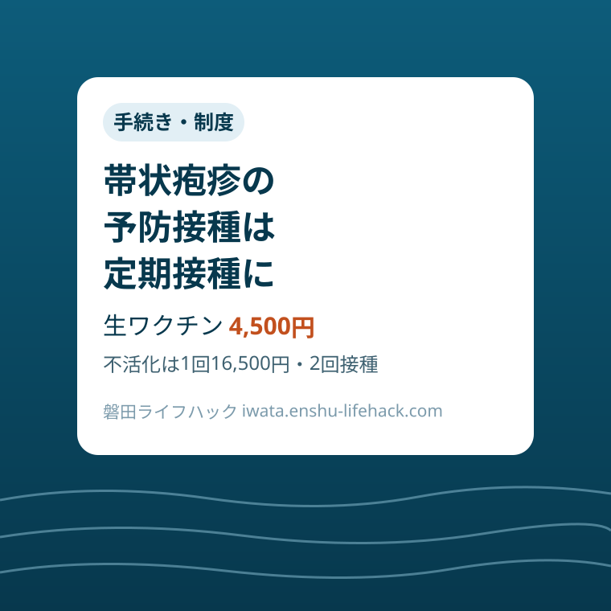

手続き・制度
磐田市の帯状疱疹予防接種｜令和8年度の対象は65歳と70歳からの5歳刻み、生ワクチン4,500円・不活化ワクチン1回16,500円

この記事の要点
Q. 磐田市の帯状疱疹予防接種は、誰がいくらで受けられますか？
A. 令和8年度の定期接種の対象は、その年度内に65歳になる方と、経過措置で70・75・80・85・90・95・100歳になる方などです。自己負担は生ワクチン4,500円（1回）、不活化ワクチン1回16,500円（2回接種）で、期間は2027年3月31日まで。対象者には4月初旬に予診票・クーポン券が郵送されています。
導入——「今年が対象の年」かどうかで、金額が大きく変わる接種
帯状疱疹の予防接種は、受ける人の年齢と年度によって、公費の定期接種として受けられるかどうかが決まります。同じワクチンでも、対象の年度に受ければ自己負担は生ワクチン4,500円で済みますが、対象でない年度に任意接種で受けると、全額自己負担になります。
磐田市では、令和7年（2025年）4月から帯状疱疹ワクチンの定期接種が始まっています。令和8年度の案内は市の公式ページに出ていますが、「自分が今年度の対象かどうか」は生年月日で決まるため、案内が届いたかどうかだけで判断すると取り違えます。
特に間違えやすいのは、不活化ワクチンが2回接種で、2回目までを期間内に終える必要がある点です。1回目を受ける時期が遅れると、2回目が年度をまたいでしまうことがあります。
この記事は手続きの整理です。予防接種を受けるかどうか、どちらのワクチンを選ぶかは、体調や持病、治療の状況も含めて本人が医療機関と相談して決めるものです。ここでは、受けることにした場合に迷わないための、対象・金額・段取りだけを扱います。
先に結論を書きます。令和8年度の対象は、その年度内に65歳になる方と、経過措置の70歳から100歳までの5歳刻みの方などです。自己負担は生ワクチン4,500円、不活化ワクチンは1回16,500円です。対象者には令和8年4月初旬に案内が郵送されているので、まずその封筒があるかを確認してください。
まず、公式資料から事実を整理する
磐田市の公式ページ「令和8年度 帯状疱疹予防接種」（ページ番号1014731、2026年9月24日更新）によると、定期接種の対象は、接種日に磐田市に住民登録があり、次の二つを両方満たす方です。
一つ目は年齢です。その年度内に65歳になる方（A）、その年度内に70・75・80・85・90・95・100歳になる方（B、令和7年度から令和11年度までの5年間の経過措置）、接種当日に60歳から64歳でヒト免疫不全ウイルスによる免疫の機能に障がいがある方（C、身体障害者手帳1級または1級程度と医師が認める場合に限ります）のいずれかに当たることが条件です。
令和8年度の生年月日に直すと、65歳は昭和36年4月2日から昭和37年4月1日生まれ、70歳は昭和31年4月2日から昭和32年4月1日生まれ、75歳は昭和26年4月2日から昭和27年4月1日生まれ、80歳は昭和21年4月2日から昭和22年4月1日生まれです。85歳は昭和16年4月2日から昭和17年4月1日生まれ、90歳は昭和11年4月2日から昭和12年4月1日生まれ、95歳は昭和6年4月2日から昭和7年4月1日生まれ、100歳は大正15年4月2日から昭和2年4月1日生まれです。
二つ目は接種歴です。過去に帯状疱疹の生ワクチン、不活化ワクチンのいずれの接種も受けていない方、または不活化ワクチンを1回のみ接種済みの方が対象です。過去に予防接種を受けた方は対象外とされています。ただし、医療機関で医師が予防接種を行う必要があると判断した場合は除くとされています。
接種期間は、令和8年（2026年）4月1日から令和9年（2027年）3月31日までです。年度の途中の今からでも、期間はまだ残っています。

自己負担額は、ワクチンの種類で大きく異なります。生ワクチン（乾燥弱毒生水痘ワクチン）は1回接種で、自己負担は1回あたり4,500円です。不活化ワクチン（乾燥組換え帯状疱疹ワクチン）は2回接種で、自己負担は1回あたり16,500円、2回分では33,000円になります。
生活保護世帯の方は、磐田市が発行した「帯状疱疹予防接種無料券」を提示すれば無料です。ただし、接種後の払い戻しはできないため、必ず接種を受ける前に提示する必要があると市は案内しています。
対象者へは、令和8年4月初旬に案内（予診票・クーポン券）が郵送される予定とされ、実際に郵送されています。届いたら医療機関へ直接予約し、クーポン券はシールを剥がさず、切り取らずに持参して、自己負担額を支払って接種を受けます。持ち物は、案内に同封の予診票・クーポン券、自己負担額、本人確認書類（マイナ保険証、資格確認書、免許証など）です。
対象（C）に該当する方は、先に健康増進課（電話0538-37-2011）へ連絡して案内の交付を受ける必要があります。転入などで案内が届いていない方も、健康増進課へ連絡するよう案内されています。協力医療機関以外で接種を希望する場合は、事前に健康増進課健康支援グループ（iプラザ3階）へ相談し、接種前に手続きが必要です。
2種類のワクチンの違い——回数・間隔・効果の持続
生ワクチンは皮下に1回接種します。病気や治療によって免疫が低下している方は接種できません。市が示す予防効果は、接種後1年で6割程度、接種後5年で4割程度です。主な副反応は、接種した部位の痒み・熱感・腫れ・痛み・しこりなどで、発疹や倦怠感が1％以上とされています。
不活化ワクチンは筋肉内に2回接種し、通常は2か月以上の間隔を置きます。免疫の状態に関わらず接種可能とされ、病気や治療で免疫の機能が低下した方などは、医師が早期の接種が必要と判断した場合に間隔を1か月まで短縮できます。予防効果は接種後1年で9割以上、5年でも9割以上、10年で7割程度と市は示しています。主な副反応は接種部位の痛みが70％以上、発赤・筋肉痛・疲労が30％以上などです。
金額だけを見ると生ワクチンが安く、効果の大きさと持続では不活化ワクチンが上回る、というのが市の資料から読み取れる構図です。どちらが合うかは、免疫の状態や治療中の病気によっても変わるため、かかりつけ医と相談して決める前提で、金額と回数を先に把握しておくのがこの記事の役割です。
帯状疱疹そのものについては、市の「帯状疱疹」のページ（ページ番号1012057）が、50歳以上で発症率が急増し、80歳までに約3人に1人が発症すると言われていること、皮膚の症状が治った後も痛みが続く帯状疱疹後神経痛が患者の10％から50％で発症すると言われていることを説明しています。発症が最も多いのは70歳代で、今回の定期接種の対象年齢と重なります。
磐田の暮らしに置き換える——封筒の確認と、2回目の逆算
最初にやることは、令和8年4月初旬に届いた案内の封筒が家にあるかの確認です。予診票とクーポン券が入っています。クーポン券はシールを剥がしたり切り取ったりすると使えなくなる扱いなので、届いたままの状態で保管してください。
封筒が見当たらない場合でも、対象かどうかは生年月日で判断できます。前の節の生年月日表と自分の生年月日を照らし、対象に当たるのに案内が届いていない場合は、転入などの事情も含めて健康増進課へ連絡するのが順序です。

不活化ワクチンを選ぶ場合は、2回目から逆算してください。間隔は通常2か月以上で、期間の終わりは2027年3月31日です。2回目を3月31日までに受けるには、1回目は遅くとも1月末ごろまでに受ける計算になります。11月の今なら、まだ余裕を持って2回分を組み立てられます。
夫婦で対象の年が重なる場合は、二人の生年月日を別々に照らしてください。経過措置は5歳刻みのため、同じ世帯でも今年度対象になる人とならない人が分かれることがあります。対象でない年に任意接種で受けると全額自己負担になるため、「夫婦そろって」と急がない方がよい場合があります。
親の分を子ども世代が手伝う場合も、判断の出発点は同じです。親の住民登録は磐田市にあるか、生年月日が今年度の対象に当たるか、過去に帯状疱疹ワクチンを受けたことがあるか。この3点を電話で聞き取るだけでも、窓口での行き違いは大きく減ります。
評価——良い点と、注文したい点
良い点は、対象者に案内とクーポン券が郵送されることです。高齢者インフルエンザのように医療機関で予診票を受け取る方式と違い、手元に届いた封筒が「今年が対象の年」という知らせそのものになります。生年月日表まで読まなくても、対象であることに気づけます。
良い点はもう一つ、2種類のワクチンの自己負担と効果が市のページで並べて示されていることです。4,500円と16,500円という金額の差、1回と2回という回数の差、効果の持続の差を、医療機関へ行く前に比べられます。
注文したい点は、対象が「年度内にその年齢になる方」という言い方で、誕生日を迎えたかどうかと混同しやすい点です。たとえば65歳の対象は、令和8年度中に65歳になる昭和36年4月2日から昭和37年4月1日生まれの方で、誕生日前でも年度内に対象になります。生年月日の範囲を、案内の封筒にも大きく書いてほしいところです。
注文したい点はもう一つ、不活化ワクチンの2回目が期間を過ぎた場合の扱いが、市のページだけでは読み取りにくい点です。2回目が年度をまたぐと定期接種として受けられない可能性がある以上、「1回目は1月末まで」という目安日を、市の案内でも明示してほしいと感じます。
対案・結論——11月のうちに封筒を確認し、かかりつけへ相談を
結論として、この制度でいちばん大切な行動は二つです。一つは、4月に届いた案内の封筒が家にあるかを確認すること。もう一つは、どちらのワクチンにするかを、かかりつけの医療機関へ相談の電話を入れることです。
不活化ワクチンを考えている方は、相談を先延ばししないでください。2回目までの逆算では、1回目の目安は1月末ごろです。11月の今に相談すれば、体調の良い日を選ぶ余裕も残ります。
生活保護世帯の方は、無料券を接種前に提示しないと無料にならず、払い戻しもできない点が分かれ目です。券が手元にあるかを、受ける前に必ず確かめてください。
過去に帯状疱疹ワクチンを接種したことがある方は、原則として対象外です。接種歴が曖昧な場合は、母子手帳ではなく大人になってからの接種記録や、以前かかった医療機関への確認が手がかりになります。判断に迷う場合は健康増進課へ相談してください。
確認する順番
- 自分の生年月日が令和8年度の対象（65歳、または70・75・80・85・90・95・100歳の範囲）に当たるかを確かめる。接種日に磐田市に住民登録があることが前提
- 令和8年4月初旬に郵送された案内（予診票・クーポン券）が家にあるかを確認する。届いていない場合は健康増進課（0538-37-2011）へ連絡する
- 生ワクチン（1回・4,500円）と不活化ワクチン（2回・1回16,500円）のどちらにするか、かかりつけ医と相談する
- 不活化ワクチンの場合は、2回目を2027年3月31日までに受けられるよう、1回目の日を逆算して予約する
- 当日は予診票・クーポン券（シールを剥がさず、切り取らずに）、自己負担額、本人確認書類を持参する。生活保護世帯は無料券を接種前に提示する
家族で共有するための記録
接種を受けたら、ワクチンの種類と接種日を記録に残してください。不活化ワクチンは2回目が2か月以上先になるため、予約日を家族のカレンダーに書いておくと、間隔の管理がしやすくなります。
対象でない年に当たる家族がいる場合は、「次の対象の年はいつか」も一緒にメモしておくと役立ちます。経過措置は令和11年度までで、その後は年度内に65歳になる方が中心になります。65歳の年に受けそびれると、次の5歳刻みの年は対象にならないため、65歳の年度は特に意識して確認してください。
大石の視点
大石の視点として、この接種で見落としやすいのは金額よりも「年」の方だと感じます。インフルエンザのように毎年受けられる接種と違い、帯状疱疹の定期接種は、対象になる年度が限られています。対象の年に知らなかった、では済まない差が生まれます。
4月に届いた封筒を「予防接種の案内だろう」と置いたままにしている家庭は少なくないはずです。11月の今は、2回接種でもまだ間に合う時期です。封筒を開けて生年月日を照らすところから始めてください。それが、この制度を暮らしの中で使うための最初の一手です。
まとめ
磐田市の帯状疱疹予防接種は、令和8年度はその年度内に65歳になる方と、経過措置の70歳から100歳までの5歳刻みの方が定期接種の対象です。自己負担は生ワクチン4,500円（1回）、不活化ワクチン1回16,500円（2回）で、期間は2027年3月31日までです。
対象者には予診票・クーポン券が郵送されています。封筒の確認、ワクチンの選択の相談、2回目からの逆算。この三つを11月のうちに進めておけば、慌てずに受けられます。
この記事で扱った範囲
- 令和8年度の定期接種の対象は、年度内に65歳になる方と、経過措置で70・75・80・85・90・95・100歳になる方、60〜64歳で免疫機能に重い障がいがある方
- 自己負担は生ワクチン4,500円（1回）、不活化ワクチン1回16,500円（2回）。生活保護世帯は無料券の事前提示で無料
- 対象者には令和8年4月初旬に予診票・クーポン券が郵送済み。クーポン券はシールを剥がさず、切り取らずに持参する
- 不活化ワクチンは2か月以上の間隔で2回。2回目を2027年3月31日までに受けるには、1回目は1月末ごろが目安
参考にした公式情報
- 令和8年度 帯状疱疹予防接種／磐田市（ページ番号1014731、2026年9月24日更新、2026年11月17日確認）
- 帯状疱疹／磐田市（ページ番号1012057、2025年4月8日更新、2026年11月17日確認）
- 令和8年度 高齢者インフルエンザ予防接種費用の助成／磐田市（ページ番号1004703、2026年9月24日更新、2026年11月17日確認）
最終確認日：2026-11-17 ／ 本記事は公表情報と執筆者の見解を分けて記載しています。制度・数値・公開状況は変更される場合があるため、最新情報は磐田市公式ページでご確認ください。